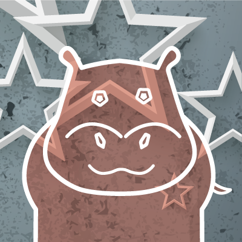
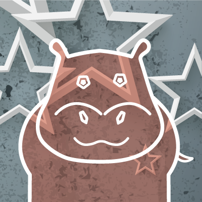

Research, Research, Research
Look at the companies that will be attending which interest you most. This is a great way to figure out which companies you’re compatible with and the key qualities they’re looking for.
Refine your Resume
Whether you’ve fine-tuned for the 100th time or just started creating your resume. Do your best to finish before the Design Career Fair. Check in with advisors, bounce ideas with friends or ask for feedback from professors. Remember, the Resume Review Booth will be available at the fair if you have any uncertanty!
Assemble your Portfolio
If you have a collection of work you’d like to show off to employers this is the perfect time to highlight some of those creative pieces.
Ask Away!
Our speakers and panelists come from a diverse set of backgrounds, which means you have a fantastic opportunity to ask the questions only they could answer.
If you come up with questions during the event feel free to ask on Twitter at #UCDavisDCF2018!
Arriving at the Design Career Fair
If you're coming from Sacramento...
If you're coming from the Bay Area...